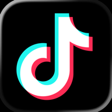

Seu celular só abre depois da oração.
O Oração Diária bloqueia seus apps pela manhã até você fazer sua oração. Sem depender da sua força de vontade.
Seu lugar no círculo de oração está garantido.
Te enviaremos o link exclusivo da App Store assim que a primeira versão for liberada.
O primeiro app  do dia decide o resto dele 📵. O brasileiro passa 3h32 ⏳ por dia em redes sociais
do dia decide o resto dele 📵. O brasileiro passa 3h32 ⏳ por dia em redes sociais 
. O maior tempo do mundo. E quase sempre a primeira coisa que a mão faz, antes do pé sair da cama 🛏️, é abrir o feed.
Não é falta de fé.
É que o celular está mais perto.
mas não depende de você lembrar.
-
Você escolhe o porquê.
Dê um nome ao seu propósito ✍️, escolha o tempo de oração ⏱️ e os dias da semana 📅. Leva um minuto, e é a única vez que você precisa decidir.
-
Seus apps trancam.
Instagram , TikTok e WhatsApp não abrem até a oração acontecer 📵. Sem brecha para o piloto automático.
-
Você ora. O dia destrava.
Seu tempo com música ambiente de louvor 🎧. Concluiu a oração, o celular volta 100% ao normal
e mais um dia
entra na sua sequência 🔥.
Antes de você perguntar.
- E se acontecer uma emergência?
-
Ligações e chamadas de emergência nunca são bloqueadas. E é você quem escolhe, um por um, quais apps entram no bloqueio da manhã.
- Vocês veem o que eu uso no celular?
-
Não, a Apple não permite. O bloqueio roda sobre o Tempo de Tela do iOS: a sua seleção de apps fica no seu aparelho, e nem nós conseguimos ver quais você escolheu.
- Dá pra burlar?
-
Dá. Ninguém prende seu celular. Mas entre o impulso e o feed passa a existir uma pergunta, e é ali que a maioria dos dias muda.
- É católico ou evangélico?
-
Os dois. O app não escreve a oração por você nem segue uma denominação: ele abre o espaço e o tempo. A oração é sua, do seu jeito.
- Vai ser pago?
-
A oração da manhã com bloqueio é gratuita, e vai continuar assim. Existirão recursos extras pagos, mas o essencial não fica atrás de paywall.
Amanhã de manhã pode ser diferente.
O app está a caminho da App Store. Quem está na lista entra antes de todo mundo.
Seu lugar no círculo de oração está garantido.
Te enviaremos o link exclusivo da App Store assim que a primeira versão for liberada.